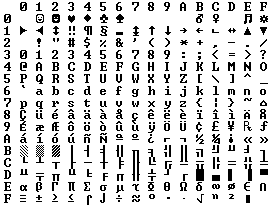

Kódování, Unicode
by Jiří Znamenáček
ASCII
„Prvním“ počítačům (nebo spíše anglicky hovořícím uživatelům necítícím potřebu psát slova s cizími písmeny :-) stačila tabulka znaků o 128 položkách, tzv. ASCII:
| 0 | 1 | 2 | 3 | 4 | 5 | 6 | 7 | 8 | 9 | A | B | C | D | E | F | |
|---|---|---|---|---|---|---|---|---|---|---|---|---|---|---|---|---|
| 0 | NUL | SOH | STX | ETX | EOT | ENQ | ACK | BEL | BS | HT | LF | VT | FF | CR | SO | SI |
| 1 | DLE | DC1 | DC2 | DC3 | DC4 | NAK | SYN | ETB | CAN | EM | SUB | ESC | FS | GS | RS | US |
| 2 | ! | " | # | $ | % | & | ' | ( | ) | * | + | , | - | . | / | |
| 3 | 0 | 1 | 2 | 3 | 4 | 5 | 6 | 7 | 8 | 9 | : | ; | < | = | > | ? |
| 4 | @ | A | B | C | D | E | F | G | H | I | J | K | L | M | N | O |
| 5 | P | Q | R | S | T | U | V | W | X | Y | Z | [ | \ | ] | ^ | _ |
| 6 | ` | a | b | c | d | e | f | g | h | i | j | k | l | m | n | o |
| 7 | p | q | r | s | t | u | v | w | x | y | z | { | | | } | ~ | DEL |
Jednotlivé prvky tabulky mají přiřazená čísla 0-127 decimálně (aneb 0-7F hexadecimálně nebo 0-177 osmičkově) – k jejich zachycení v počítači tudíž stačí pouhých 7 bitů z každého bajtu.
print('\x07') (nebo ekvivalentně kódovým znakem print('\a')) ^_~
Nadstavby ASCII
Počítače však už standardně používaly bajty, tj. bitů 8. To dávalo k dispozici dalších 128 možných znaků. Není ale divu, že každý si do volného místa vymyslel něco úplně jiného, kupříkladu i grafické prvky:

PS: Bajty a znaky
Základní jednotkou paměti počítačů je jeden bajt. V rámci jednoho bajtu dokáží počítače uložit – a tím pádem i rozpoznat – právě 256 různých čísel.
00000000 (což je nula jak dvojkově, tak desítkově) přes 01111111 (desítkově 127) až po 11111111 (desítkově 255).
Většinou jsou tato čísla příkazy pro procesor, co má vykonat za instrukci, případně číselná data těchto instrukcí. Pokud však daný úsek paměti představuje text, odpovídají uvedená čísla znakům tohoto textu. A jelikož téměř všechna jednobajtová kódování znaků používají celých osm bitů, umožňuje takovéto kódování přiřadit k těmto dvěma stům padesáti šesti číslům stejný počet různých znaků textu – prostě jaké číslo se v dané buňce paměti nachází, takový znak (podle příslušné dekódovací tabulky daného kódování) mu odpovídá.
Kódové stránky
Pro rozlišení mezi různými rozšířeními v osmém bitu se zavedly tzv. kódové stránky (CP = code pages). Příkladem budiž CP 852 (Latin 2), Windows 1250 (Central Europe) nebo ISO/IEC 8859-5 (Cyrillic).
svět se liší bajtem pro písmenko ě v různých jednobajtových kódováních následujícím způsobem (hodnoty jsou uvedeny v šestnáctkové soustavě):
| ISO 8859-2 | CP1250 | CP852 | MacCE |
|---|---|---|---|
| 73 76 EC 74 | 73 76 EC 74 | 73 76 D8 74 | 73 76 9E 74 |
s = 73, v = 76, t = 74 (podívejte se do tabulky na prvním slajdu). Celkem jsou na čtyři znaky slova potřeba právě čtyři bajty, tedy co znak, to jeden bajt. Proto se takovýmto kódováním říká jednobajtová.
Alespoň že se všichni shodli, že prvních 128 čísel (0-127) bude odpovídat znakům starého dobrého ASCII – důsledkem je, že text obsahující převážně písmena latinské abecedy bez diakritiky bývá zvětší části čitelný, i když je zobrazen ve špatném kódování (kdy se tedy znaky s čísly 128 až 255 nezobrazují všechny správně).
Intermezzo
Mimochodem – nejen že co jazyk, to vlastní CP. Spíš co výrobce nebo program to vlastní CP *_* Pamětníkům dodnes vstávají vlasy hrůzou na hlavě, když si vzpomenou na různá kódování češtiny…
A nezapomeňme na východní jazyky, kterým pouhých 128/256 znaků na zaznamenání jejich obrázkových písem o desítkách tisíc znaků v žádném případě stačit nemohlo! Ty svůj problém vyřešily použitím tzv. DBCS-systému – něco se zapsalo bajtem jedním, něco (většina) dvěma.
Enter Unicode!
Dlouho přehlížený problém, který se provalil na světlo s příchodem Internetu (a tedy do té doby nevídanou volnou výměnou dokumentů mezi různými počítači a systémy), naštěstí pár osvícenců* řešilo už v osmdesátých letech. Výsledkem jejich snažení byla univerzální množina znaků, tzv.
UNICODE
PS: Kromě samotné tabulky znaků řeší Unicode ale i mnoho dalších věcí, zvláště pro implementátory – namátkou třebas řazení nebo vykreslování.
Code Points
V Unicode'u má každý znak (jehož přesná definice není ani trochu triviální!) přiřazeno jedinečné konkrétní číslo, tzv. code point. Tak kupříkladu latinské A má číslo U+0041 a řecká α zase U+03B1.
Přiřazených znaků je v dané chvíli již přes sto tisíc, tudíž je jasné, že pro jejich zachycení si už dávno nevystačíme ani se dvěma bajty.
256^2=65536 (teoreticky) možným znakům.
Kódování
Nejjednodušším způsobem jak uložit text v Unicode'u bude asi prostě zapsat jeho code point přímo jako bajty (pro prvních 65536 znaků případ UTF-16). Číhá na nás ale několik zádrhelů:
-
Ne všechny systémy ukládají vícebajtové hodnoty ve stejném pořadí (viz big-endian a little-endian)!
📝Pořadí big-endian je tak nějak lidsky přirozenější – číslo 256, které už se nevleze do jednoho bajtu a musíme ho tak zapsat bajty dvěma, se v něm zapíše jako
00000001 00000000(tedy1*256^1 + 0*256^0), zatímco v little-endian je pořadí bajtů opačné, tj.00000000 00000001(neboli0*256^0 + 1*256^1). - Vidíte, kolik zbytečných nul bude obsahovat text, na který by bývalo stačilo ASCII?
První problém (pořadí bajtů) byl nuceně vyřešen (téměř) povinným zápisem jisté sekvence bajtů na začátek každého unicodového řetězce, tzv. BOM (byte order mark). Podle jejich pořadí pak program (interpretující danou sekvenci bajtů jako text) pozná, o kterou z obou variant jde.
FE FF pro UTF-16 a 00 00 FE FF pro UTF-32. V UTF-8 BOM (který pak je EF BB BF) spíše překáží – za prvé je tam zbytečný (UTF-8 je sekvence jednotlivých bajtů, takže žádné problémy s pořadím zápisu vícebajtových hodnot nemá) a za druhé s ním spousta programů nepočítá.
Druhý problém si ovšem vyžádal hodně přemýšlení: Jak jednoznačně a výhodně zaznamenat oněch více jak sto tisíc znaků, aby se všechny vešly, ale přitom jsme nespotřebovávali zbytečně moc místa?
Enter UTF-8!
Naprosto geniálním řešením (i když východní Asie naše nadšení sdílet nemusí) je kódování UTF-8.
- Znaky s code points 0 až 127, tj. staré dobré ASCII, se vlezou do jednoho bajtu a jsou zaznamenány úplně stejně.
- Znaky s vyššími code points se zaznamenávají rozdílným počtem bajtů (dvěma až čtyřmi).
Příklad: České slovo svět je v UTF-8 zakódováno do 5 bajtů, ačkoli má pouze 4 písmenka – 73 76 C4 9B 74 (hexadecimálně). Zvětšení jde na vrub písmenku ě, které potřebuje bajty dva (C4 9B), zatímco zbylá tři písmenka jsou zakódována stejně jako v ASCII (porovnejte s příklady jednobajtových kódování).
UTF-8 algoritmus
Konkrétně platí, že začíná-li bajt v UTF-8 zakódovaném textu na jedničku, jde o součást vícebajtové reprezentace jednoho konkrétního znaku s codepointem v rozsahu 128+:
| oktet 1 | oktet 2 | oktet 3 | oktet 4 | code point | znaků |
|---|---|---|---|---|---|
| 0xxxxxxx | 0xxxxxxx | 128 | |||
| 110zzzyy | 10xxxxxx | 00000zzz yyxxxxxx | ? | ||
| 1110wwww | 10zzzzyy | 10xxxxxx | wwwwzzzz yyxxxxxx | ? | |
| 11110uuu | 10vvwwww | 10zzzzyy | 10xxxxxx | 000uuuvv wwwwzzzz yyxxxxxx | ? |
10 jsou druhým (třetím, čtvrtým…) ve vícebajtovém záznamu, zatímco bajty začínající na 11 jsou počátkem příslušného vícebajtového záznamu znaku (a konkrétní tvar začátku tohoto bajtu pak i říká, z kolika dalších bajtů je třeba výsledný codepoint spočítat).
PS: Otazníčky v posledním sloupečku jsou pochopitelně úkol na příslušné hodině ^_~ Nicméně přímý převod z bitů na počet znaků je pouze teoretické maximum, které sráží asi tak na polovinu výrazně komplikovanější struktura Unicode'u, než by člověk na první pohled čekal. (Ne všechny dostupné číselné rozsahy jsou totiž použity pro codepoints, tedy vlastní určení znaku. Navíc se také uplatňuje pravidlo, že je-li možné daný codepoint v bajtech zapsat vícero způsoby, vybírá se ten kratší, čímž se delší varianta vyřadí z množiny dostupných hodnot.)
Příklad (čeština)
Podívejme se na zoubek českému slovu svět v kódování UTF-8:
>>> 'svět'.encode('utf-8')
b'sv\xc4\x9bt'
Písmenu ě tedy odpovídá sekvence bajtů \xc4\x9b, zatímco písmena s, v a t jakožto členy spodní části ASCII-tabulky jsou reprezentována sama sebou. V tomto případě můžeme toto rozdělení vykoukat snadno přímo (pouze jeden znak je zaznamenán dvoubajtově), ale správně ho zjistíme až z odpovídající binární podoby:
# s (skutečně začíná na 0, zobrazeno je jenom 7 bitů)
>>> bin(ord('s'))
'0b1110011'
# v (skutečně začíná na 0, zobrazeno je jenom 7 bitů)
>>> bin(ord('v'))
'0b1110110'
# ě
>>> bin(int('c4', 16))
'0b11000100'
>>> bin(int('9b', 16))
'0b10011011'
# t (skutečně začíná na 0, zobrazeno je jenom 7 bitů)
>>> bin(ord('t'))
'0b1110100'
Podle algoritmu pro kódování UTF-8 získáme pro jednotlivé znaky odpovídající číslo do unicodové tabulky:
# s = '0b01110011'
>>> int('01110011', 2)
115
# v = '0b01110110'
>>> int('01110110', 2)
118
# ě = '0b11000100' '0b10011011'
>>> int('00000001', 2) * 256 + int('00011011', 2)
283
# t = '0b01110100'
>>> int('01110100', 2)
116
Aniž bychom koukali do standardu, jaké znaky těmto unicodovým codepointům odpovídají, můžeme daná čísla přímo použít pro znakové HTML-entity s v ě t: „svět“
Příklad (japonština)
Podívejme se na zoubek japonskému znaku 狼 (ookami = vlk) v kódování UTF-8:
>>> '狼'.encode('utf-8')
b'\xe7\x8b\xbc'
Jednotlivé bajty mají následující binární podobu:
>>> bin(int('e7', 16))
'0b11100111'
>>> bin(int('8b', 16))
'0b10001011'
>>> bin(int('bc', 16))
'0b10111100'
Podle algoritmu pro kódování UTF-8 získáme odpovídající číslo do unicodové tabulky:
>>> int('01110010', 2) * 256 + int('11111100', 2)
29436
A decimální 29436 je skutečně codepoint odpovídající v Unicode'u znaku 狼.
狼: „狼“
Poznámka k UTF-8
Zatímco české znaky s nabodeníčky v libovolném jednobajtovém (tedy osmibitovém) kódování zabírají samozřejmě právě jeden bajt, v kódování UTF-8 zabírají bajty dva.
192: À Á Â Ã Ä Å Æ Ç È É Ê Ë Ì Í Î Ï
208: Ð Ñ Ò Ó Ô Õ Ö × Ø Ù Ú Û Ü Ý Þ ß
224: à á â ã ä å æ ç è é ê ë ì í î ï
240: ð ñ ò ó ô õ ö ÷ ø ù ú û ü ý þ ÿ
256: Ā ā Ă ă Ą ą Ć ć Ĉ ĉ Ċ ċ Č č Ď ď
272: Đ đ Ē ē Ĕ ĕ Ė ė Ę ę Ě ě Ĝ ĝ Ğ ğ
288: Ġ ġ Ģ ģ Ĥ ĥ Ħ ħ Ĩ ĩ Ī ī Ĭ ĭ Į į
304: İ ı IJ ij Ĵ ĵ Ķ ķ ĸ Ĺ ĺ Ļ ļ Ľ ľ Ŀ
320: ŀ Ł ł Ń ń Ņ ņ Ň ň ʼn Ŋ ŋ Ō ō Ŏ ŏ
336: Ő ő Œ œ Ŕ ŕ Ŗ ŗ Ř ř Ś ś Ŝ ŝ Ş ş
352: Š š Ţ ţ Ť ť Ŧ ŧ Ũ ũ Ū ū Ŭ ŭ Ů ů
368: Ű ű Ų ų Ŵ ŵ Ŷ ŷ Ÿ Ź ź Ż ż Ž ž ſ
Podobně asijská písma dříve typicky zapisovaná pomocí svých specifických dvoubajtových kódování zabírají v UTF-8 na každý znak bajty tři (což jejich záznam v tomto kódování pochopitelně značně prodlužuje).
A co na to Python?
Odpověď je dvojí a nehezká:
-
Python 3 – pokud není řečeno jinak, je vše pokládáno za UTF-8. *nirvána*
📝I když díky BOMu bohužel zdaleka ne tak úplná, jak by mohla být – viz rozdíl mezi kódováními
utf-8autf-8-sig0_o -
Python 2 – vše je pokládáno za sekvence bajtů v případě potřeby interpretované jako řetězce v aktuálním kódování (to jako vážně!) a pokud vám to nestačí, připravte se na škrábání levou rukou za pravým uchem s nohama svázanýma do kozelce.
📝U Python'u 2 vás budou zajímat metody takovéhoto „řetězce“ decode() a encode() plus velmi často systémová knihovna codecs.